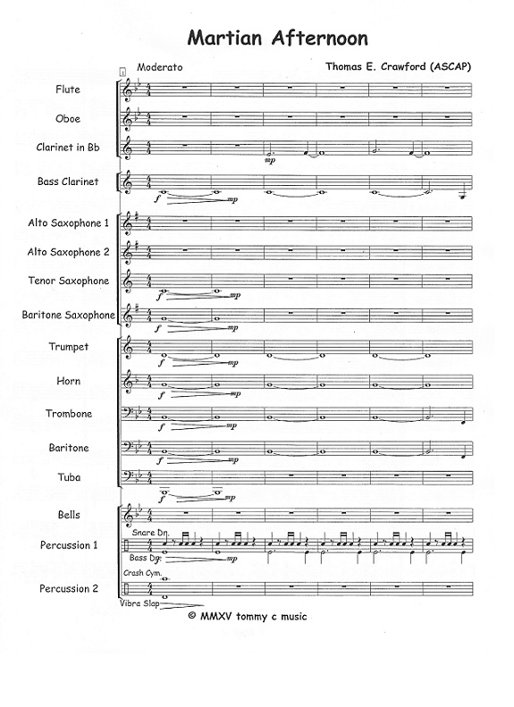
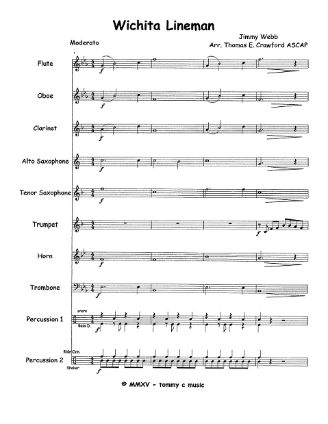
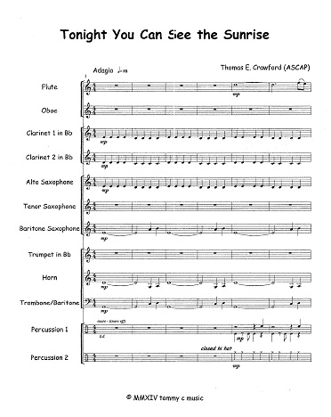
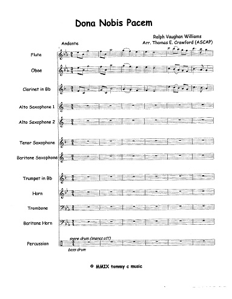
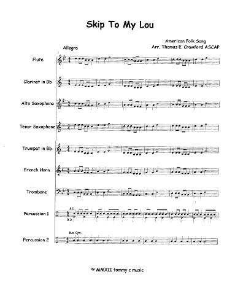
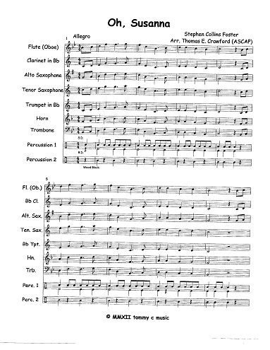
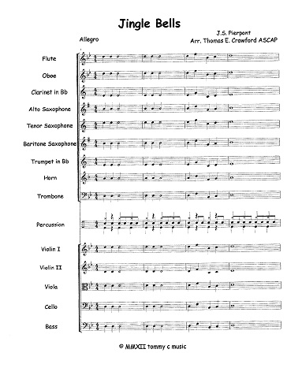
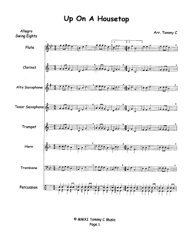
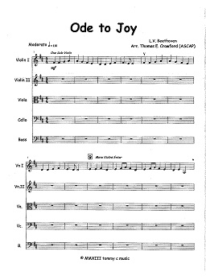

TommyCMusic.com
Beginning Band and Strings Arrangements
My Shop
*Only the "CCC Orchestra" and "Compositions and Arrangements" home pages were made, all information was taken from the original website*
Thomas E. Crawford ASCAP
American Society of Composers, Authors, and Publishers
Below are links to the PDF files on ETSY and the mp3 audios of the pieces.
Questions? Email
tommycmusic@gmail.com
Martian Afternoon

Wichita Lineman

Tonight You Can See the Sunrise

Dona Nobis Pacem

Skip to My Lou

Oh, Susanna

Jingle Bells

Up On A Housetop

Other Music
Notation available upon request
Stuff 77b (Working Title)
Nostalgic Mood
Sometimes There's Gain, Sometimes There's Loss (In Bb, Capo 3)
Sometimes There's Gain, Sometimes There's Loss (In G, No Capo)
Ode to Joy
